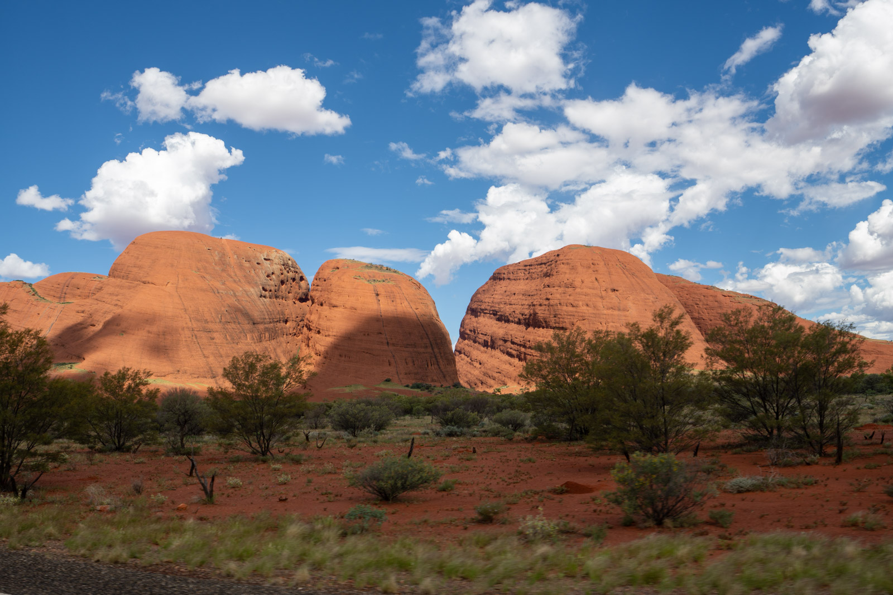
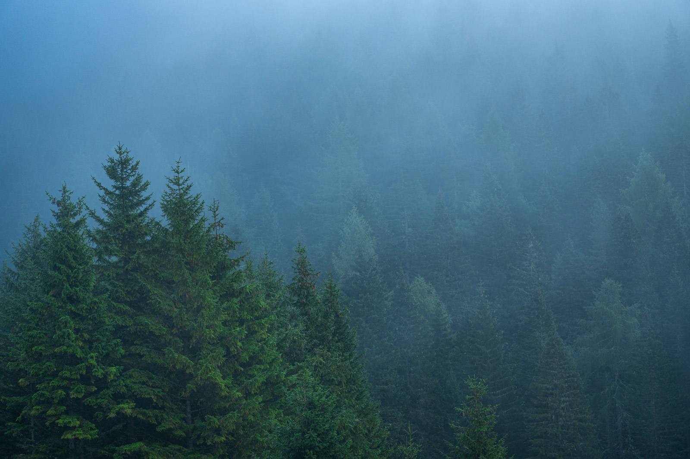
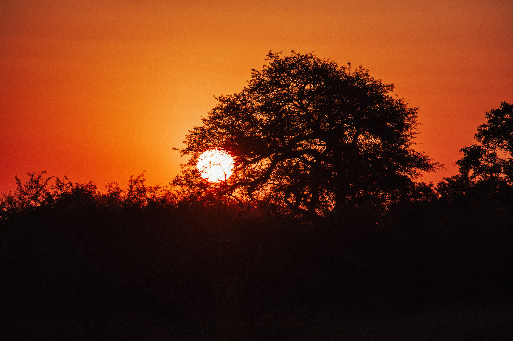
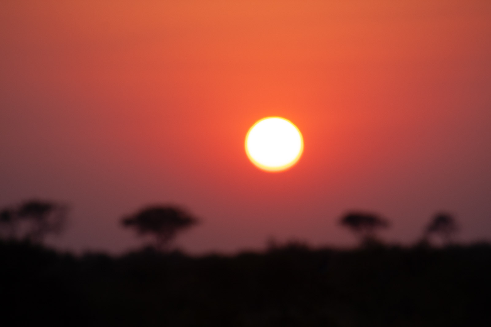
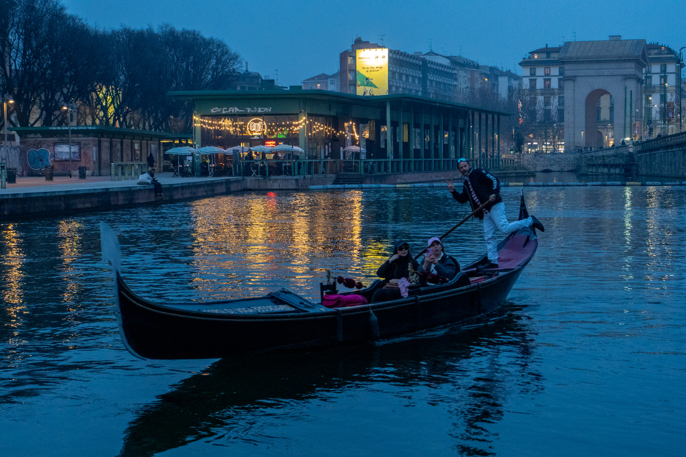
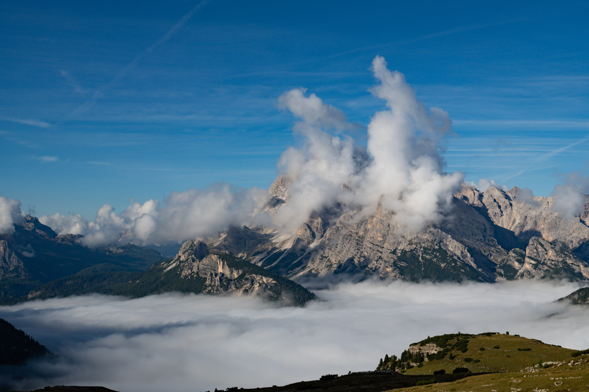

Guardare la luce, non le cose
Chi inizia guarda il soggetto. Chi fotografa da anni guarda prima la luce che cade sul soggetto. È lo stesso luogo, ma con una luce diversa diventa un'altra foto.
Ogni luce si descrive con tre domande:
- Com'è? Dura o morbida.
- Da dove arriva? Davanti, di lato, da dietro, dall'alto.
- Di che colore è? Calda, neutra, fredda.
Impara a rispondere prima di alzare la fotocamera. Diventa un'abitudine in poche settimane.
Luce dura e luce morbida
La qualità della luce dipende da quanto è grande la sorgente rispetto al soggetto. Non da quanto è forte.
- Luce dura. Sorgente piccola, come il sole in un cielo sereno. Ombre nette, contrasto alto, colori saturi.
- Luce morbida. Sorgente grande, come un cielo coperto o la nebbia. Ombre sfumate, contrasto basso, dettagli delicati.


Nessuna delle due è migliore. La luce dura dà forza e grafica. Quella morbida dà atmosfera e racconta i dettagli. Il problema nasce solo quando la luce non è adatta al soggetto.
La direzione
| Direzione | Effetto |
|---|---|
| Frontale, il sole alle tue spalle | Colori pieni, poche ombre, volume piatto |
| Laterale | Rivela le forme e le texture, dà profondità |
| Controluce | Sagome, bordi luminosi, atmosfera |
| Dall'alto, a mezzogiorno | Ombre corte e dure sotto gli oggetti |
La luce laterale è la più ricca per il paesaggio e il ritratto. Il controluce è il più difficile da esporre e il più generoso quando funziona.

In controluce l'esposimetro va in difficoltà. Decidi tu cosa deve essere esposto bene: il cielo, e allora il soggetto diventa nero, oppure il soggetto, e allora il cielo si brucia.
Il colore della luce
Hai visto i gradi Kelvin nel modulo 5. Nella pratica conta sapere come cambia il colore della luce durante il giorno.
- Ora d'oro. Più o meno l'ora dopo l'alba e quella prima del tramonto. Sole basso, luce calda e laterale, ombre lunghe.
- Ora blu. Il tempo poco prima dell'alba e poco dopo il tramonto, con il sole sotto l'orizzonte. Cielo blu profondo, luci artificiali accese.
- Mezzogiorno. Luce neutra e dall'alto. Difficile per i volti e i paesaggi aperti, ma ottima nei boschi, nei vicoli e sott'acqua.


La durata dell'ora d'oro e dell'ora blu cambia con la latitudine e la stagione. D'estate e lontano dall'equatore durano di più. Vicino all'equatore il sole scende in fretta e la luce cambia in pochi minuti.
Il meteo è luce
Il bel tempo non è il tempo migliore per fotografare. Un cielo sereno e piatto è spesso il più noioso.
- Nuvole sparse creano zone di luce e ombra sul paesaggio. Aspetta che il sole illumini la parte giusta.
- Nebbia e foschia separano i piani e semplificano la scena.
- Dopo un temporale l'aria è pulita e i colori sono intensi.
- Neve riflette la luce ovunque e ammorbidisce le ombre. Ricordati la compensazione.

Esercizio
Una giornata intera, anche a intervalli
Lo stesso posto, cinque luci
- Scegli un luogo vicino a casa: una facciata, un albero, una strada.
- Fotografalo dallo stesso punto all'alba, a metà mattina, a mezzogiorno, al tramonto e all'ora blu.
- Per ogni foto scrivi le tre risposte: com'è la luce, da dove arriva, di che colore è.
- Metti le cinque foto in fila e scegli quella dove il luogo è più vero.